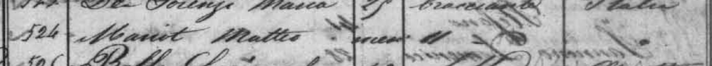
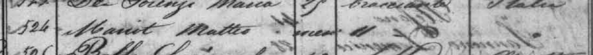

Giovanni e Brigida Mariot
Muitas idéias, poucos fatos
Giovanni é um personagem um pouco misterioso. Ele aparece no censo de Longarone, mas ele não viajou com o pai nem com a mãe. O único registro que pude encontrar no Arquivo Nacional de um Giovanni Mariot na imigração do Rio de Janeiro data de 18 de dezembro de 1880. Na lista de passageiros do vapor Berlin, Giovanni Mariot de 26 anos aparece acompanhado de um Matteo Mariot e ambos embarcaram com destino a Paranaguá. A idade é a mesma do Giovanni de Longarone, e como ele não viajou com o resto da família, o caso parece encerrado, exceto pela figura misteriosa que supostamente o acompanhava. Não há, até o presente, registros de um outro Matteo Mariot nas colônias de Santa Catarina. A idade de Matteo na lista de bordo sugere que ele teria 11 anos de idade. Porém, o número 11 aparece na coluna errada e pode ter sido mal interpretado.
Hipóteses
Na ausência de mais informações, podemos presumir que Giovanni deve ter se dirigido à Urussanga entre 1879 e 1882, quando os demais membros da família imigraram. Algumas fontes dizem que um certo Giovanni Mariot casou-se com Maria Lorenzi, mas não se sabe quem são os pais, portanto não podemos confirmar se é o mesmo Giovanni.
Giovanni não aparece no óbito de Matteo. Talvez ele tenha falecido antes de 1896.
Uma fonte separada diz que Giovanni casou-se com Maria Colombo. Não encontrei registros.
Por que Giovanni não foi ao Brasil com o restante da família? Talvez ele também estivesse no exército. Em 1879 ele tinha idade o suficiente para ser dispensado. Por outro lado, ele parece ter sabido para onde dirigir-se, ao contrário de Giosuè.
 
Giovanni e Matteo Mariot na lista de passageiros do vapor Berlin. Eles aparecem separados, em páginas consecutivas.
Giovanni tem 26 anos e Matteo tem a idade ilegível. Mas a coluna "condizione" ("condição") diz.. "11".

Giovanni e Matteo Mariot na lista de passageiros do vapor Berlin. Eles aparecem separados, em páginas consecutivas.
Giovanni tem 26 anos e Matteo tem a idade ilegível. Mas a coluna "condizione" ("condição") diz.. "11".
Quanto a Brigida, como mencionado anteriormente, não temos notícias porque ela não aparece em nenhum documento. As duas hipóteses são:
Hipóteses
- Ela mudou de nome após casar-se ainda na Itália; ou
- Ela morreu jovem. (Ela também não aparece no óbito de Matteo e talvez tenha morrido antes de 1896.)
Não se sabe se ela foi ou não ao Brasil. Caso tenha ido, foi separadamente dos outros.
Por favor entre em contato e publicarei aqui.